Polygon Clipping
In this section we're going to implement a simplified version of the Sutherland-Hodgman polygon clipping algorithm to clip a polygon against a bounding box. This algorithm is iterative. We will clip the polygon against one edge of the bounding box at a time. Clipping against each edge produces a new polygon, which is then clipped against the next edge. The algorithm works like this:
- For each edge \((line)\) of bounding box
- For each edge \((P0, P1)\) of polygon
- Add point \(P0\) to the output polygon if it is inside the bounding box
- If edge \((P0, P1)\) crosses \((line)\), add the intersection point to the output polygon
- For each edge \((P0, P1)\) of polygon
We only check if the first point of an edge is inside the bounding box or not. This is because the polygon is closed, every point will be processed as the first point of an edge.
Example
Let's walk trough how the following polygon \((ABCDEF)\) would be clipped against the rectangle. The polygon is made up of only one contour. We will generate a new output polyong.
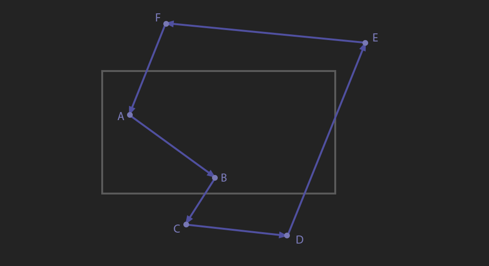We need to clip against each side of the rectangle one at a time, let's start with the bottom. We're going to treat the bottom edge as an infinate plane where \(y = ymax\), and clip the polygon against this line. We're going to iterate one edge at a time, starting with edge \(AB\). First, check that the starting point is on the correct side of the line. It is, so we add it to the output polygon. Next, check if the line segment \(AB\) crosses the line \(y = ymax\). It does not, no other points need to be added.
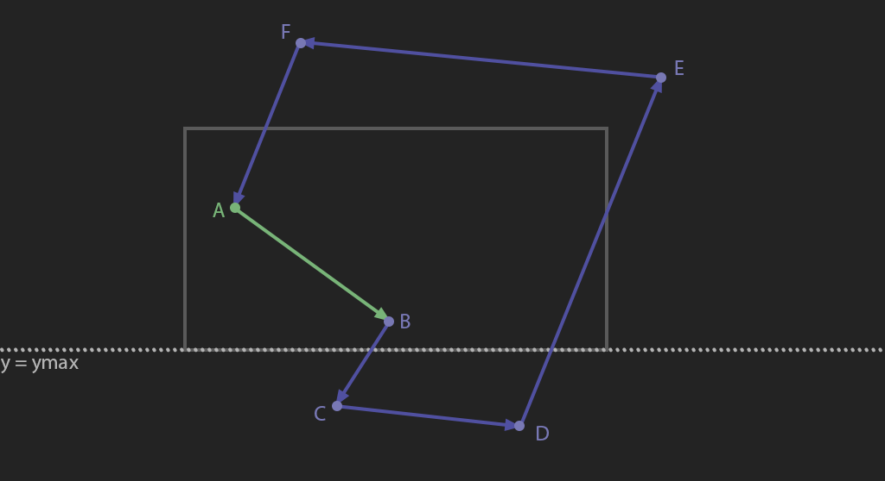Next, we consider edge \(BC\). The starting point is less than \(ymax\) so we add it to the output polygon. Next, check if the segment \(BC\) crosses the line \(y = ymax\). It does, so we add the intersection point as a new point to the polygon, point \(G\).
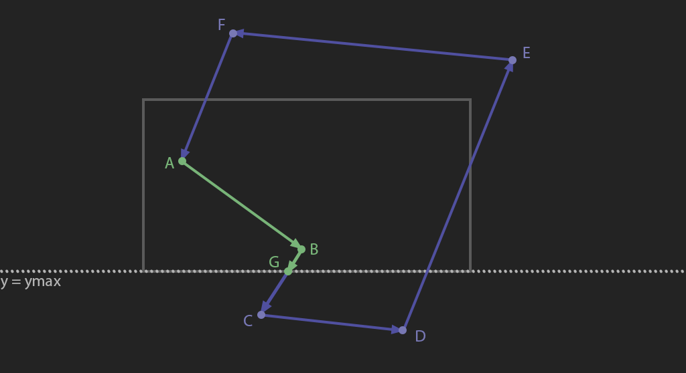Next, we consider edge \(CD\). The starting point \(C\) is greater than \(ymax\), it is not added to the output polygon. The segment \(CD\) does not cross the line \(y = ymax\), no other points need to be added.
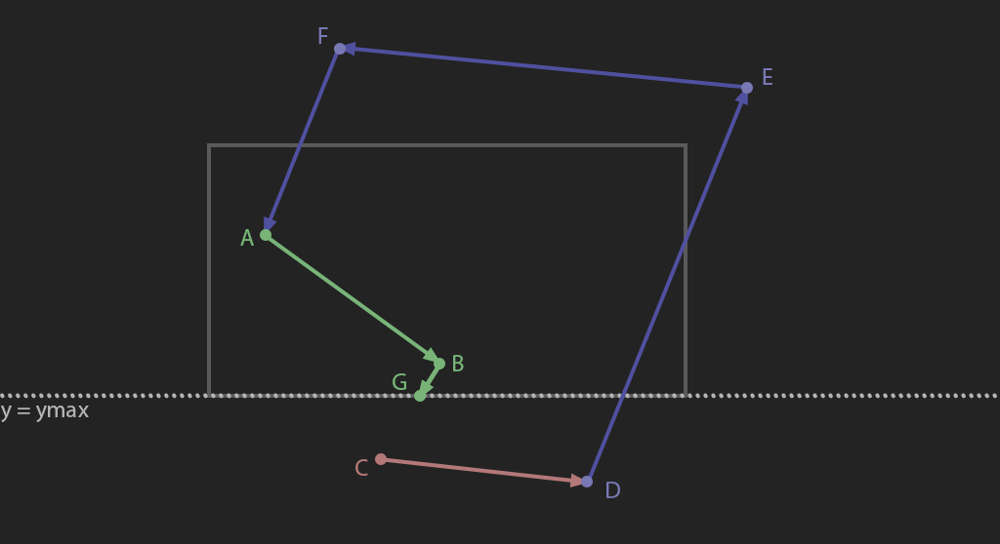Next, consider edge \(DE\). The starting point \(D\) is greater than \(ymax\), it is not added to the output polygon. The segment \(DE\) crosses line \(y = ymax\). Add the intersection point \(H\) to the output polygon.
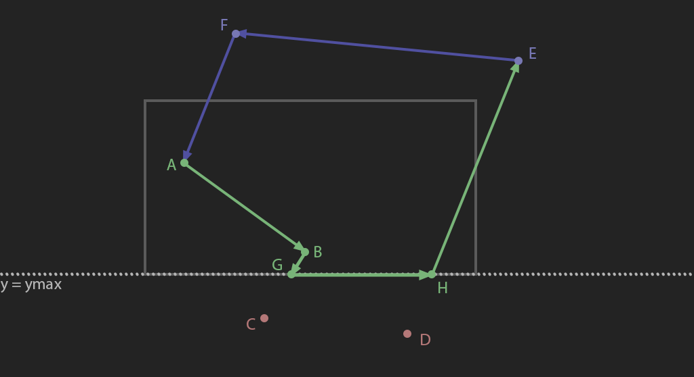Both \(E\) and \(F\) are above \(y = ymax\), and neither of them cross the line, they will both be added to the output polygon with not additional points created.
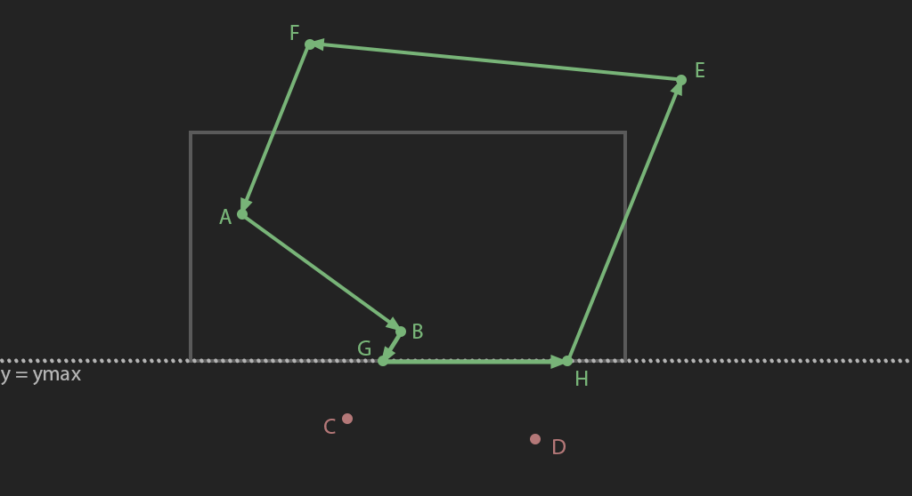We're done clipping against \(y = ymax\). The order we clip against edges does not matter, let's clip against the top edge \(y = min\) next. We need to take the output polygon from clipping the last edge and treat it as the input polygon for this edge. We will clip polygon \((ABGHEF)\) against \(y = min\).
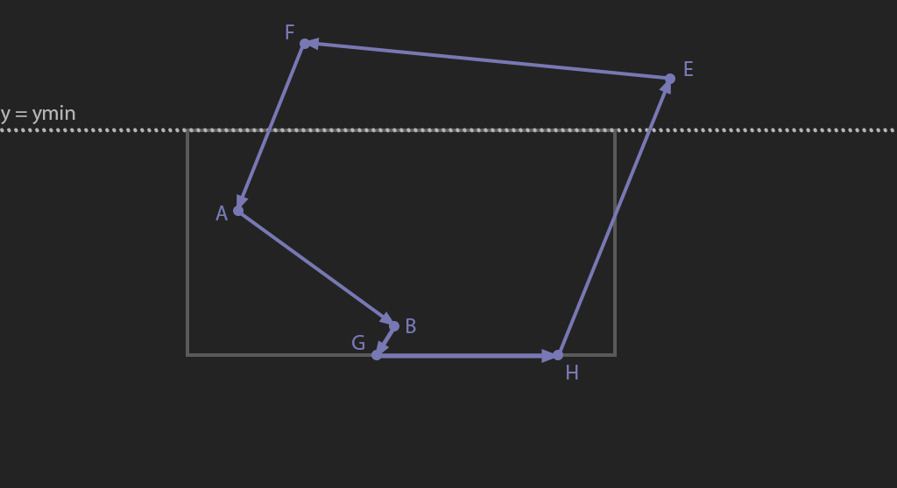\(A\), \(B\), \(G\) and \(H\) are all below \(y = ymin\). None of the edges \(AB\), \(BG\), \(GH\) cross \(y = ymin\). All of these points can be added to the output polygon without inserting any additional new points.
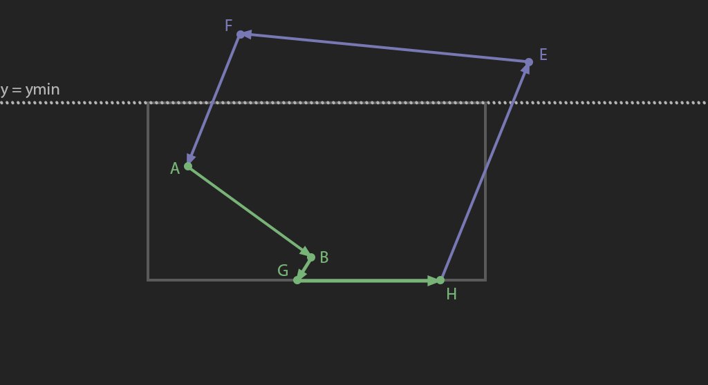The segment \(HE\) crosses \(y = ymin\), find where the edge crosses and add the new point \(I\) to the output polygon. Both points \(E\) and \(F\) are less than \(y = ymin\), they will not be added to the output polygon.
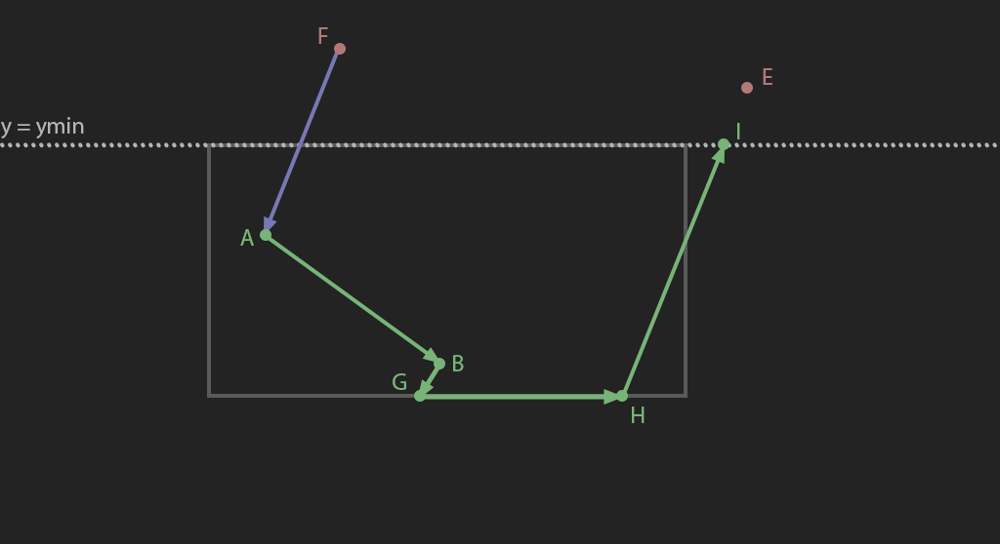Segment \(FA\) crosses \(y = ymin\), find the intersection and add the new point \(J\) to the output polygon.
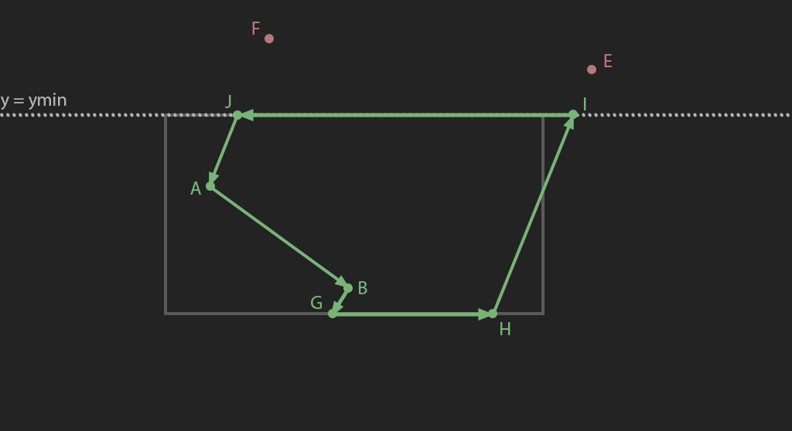The polygon \((ABGHEF)\) has been clipped against \(y = ymin\), take the output polygon \(ABGHIJ\) and clip it against \(x = xmax\).

Points \(A, B, G, H\) are all less than \(xmax\), they are added to the output polygon. Segment \(HI\) crosses \(x = xmax\). Insert the intersection point \(K\) into the output polygon.
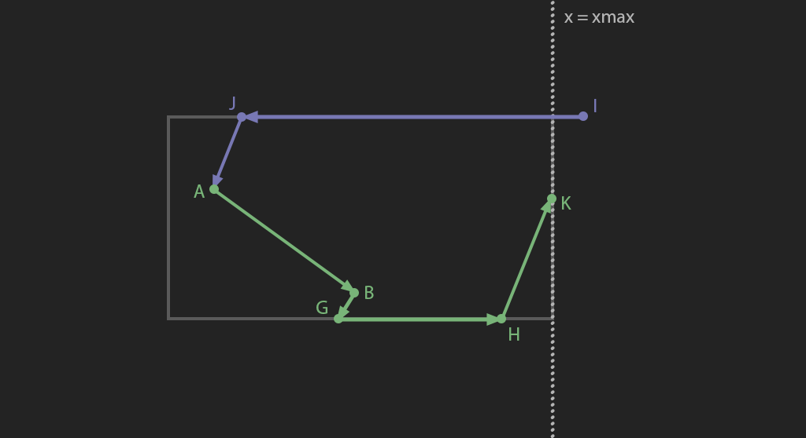Segment \(IJ\) crosses \(x = xmax\), add the intersection \(L\) to the output polygon. Point \(J\) is less than \(xmax\), add it to the output polygon as well.
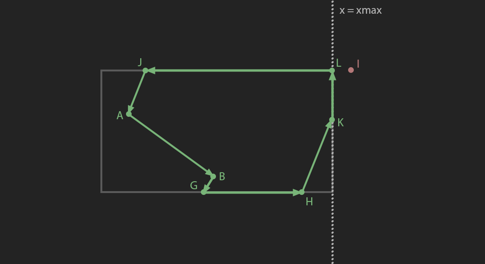We're done clipping against \(x = xmax\). All points are greater than \(xmin\), there is nothing to clip against \(x = xmin\). Polygon \(ABGHKLJ\) is the final clipped polygon.
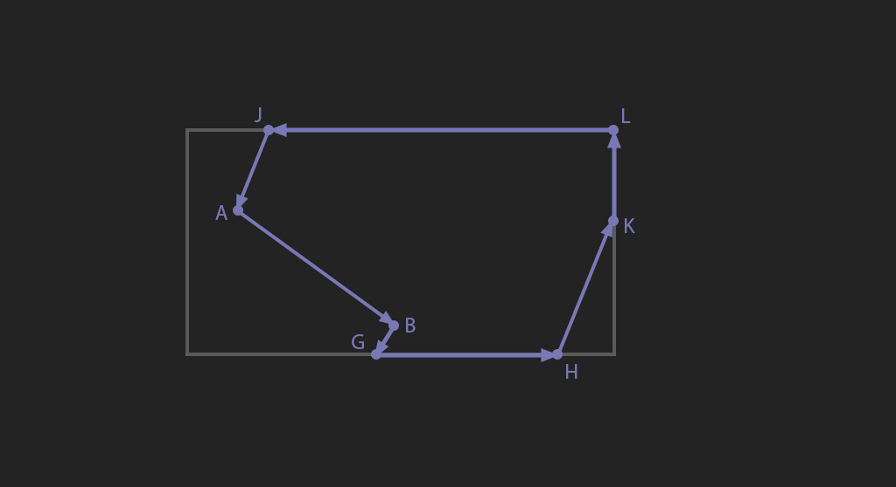Implementation
Polygon ClipPolygon(const Polygon& poly, const BoundingBox& box) {
unsigned int numContours = (int)poly.size();
Polygon bufferA, bufferB;
bufferA.resize(poly.size());
bufferB.resize(poly.size());
// Clip left
for (int contour = 0; contour < numContours; ++contour) {
const Contour& c = poly[contour];
bufferA[contour].clear();
int numPoints = (int)c.size();
for (int point = 0; point < numPoints; ++point) {
const Point& p = c[point];
if (p.x >= box.min.x) {
bufferA[contour].push_back(p);
}
const Point& n = c[(point + 1) % numPoints];
float min_x = p.x < n.x ? p.x : n.x;
float max_x = p.x > n.x ? p.x : n.x;
if (min_x <= box.min.x && max_x >= box.min.x) {
bool vertical = fabsf(n.x - p.x) < 0.0001f;
if (!vertical) {
Point clip{ box.min.x, p.y + (n.y - p.y) * (box.min.x - p.x) / (n.x - p.x) };
bufferA[contour].push_back(clip);
}
}
}
}
// Clip right
for (int contour = 0; contour < numContours; ++contour) {
const Contour& c = bufferA[contour];
bufferB[contour].clear();
for (int point = 0, numPoints = (int)c.size(); point < numPoints; ++point) {
const Point& p = c[point];
if (p.x <= box.max.x) {
bufferB[contour].push_back(p);
}
const Point& n = c[(point + 1) % numPoints];
float min_x = p.x < n.x ? p.x : n.x;
float max_x = p.x > n.x ? p.x : n.x;
if (min_x <= box.max.x && max_x >= box.max.x) {
bool vertical = fabsf(n.x - p.x) < 0.0001f;
if (!vertical) {
Point clip{ box.max.x, p.y + (n.y - p.y) * (box.max.x - p.x) / (n.x - p.x) };
bufferB[contour].push_back(clip);
}
}
}
}
// Clip top
for (int contour = 0; contour < numContours; ++contour) {
const Contour& c = bufferB[contour];
bufferA[contour].clear();
for (int point = 0, numPoints = (int)c.size(); point < numPoints; ++point) {
const Point& p = c[point];
if (p.y >= box.min.y) {
bufferA[contour].push_back(p);
}
const Point& n = c[(point + 1) % numPoints];
float min_y = p.y < n.y ? p.y : n.y;
float max_y = p.y > n.y ? p.y : n.y;
if (min_y <= box.min.y && max_y >= box.min.y) {
bool horizontal = fabsf(n.y - p.y) < 0.0001f;
if (!horizontal) {
Point clip{ p.x + (n.x - p.x) * (box.min.y - p.y) / (n.y - p.y), box.min.y };
bufferA[contour].push_back(clip);
}
}
}
}
// Clip bottom
for (int contour = 0; contour < numContours; ++contour) {
const Contour& c = bufferA[contour];
bufferB[contour].clear();
for (int point = 0, numPoints = (int)c.size(); point < numPoints; ++point) {
const Point& p = c[point];
if (p.y <= box.max.y) {
bufferB[contour].push_back(p);
}
const Point& n = c[(point + 1) % numPoints];
float min_y = p.y < n.y ? p.y : n.y;
float max_y = p.y > n.y ? p.y : n.y;
if (min_y <= box.max.y && max_y >= box.max.y) {
bool horizontal = fabsf(n.y - p.y) < 0.0001f;
if (!horizontal) {
Point clip{ p.x + (n.x - p.x) * (box.max.y - p.y) / (n.y - p.y), box.max.y };
bufferB[contour].push_back(clip);
}
}
}
}
// Clean up polygon by removing empty contours
for (int i = bufferB.size() - 1; i >= 0; --i) {
if (bufferB[i].size() == 0) {
bufferB.erase(bufferB.begin() + i);
}
}
return bufferB;
}